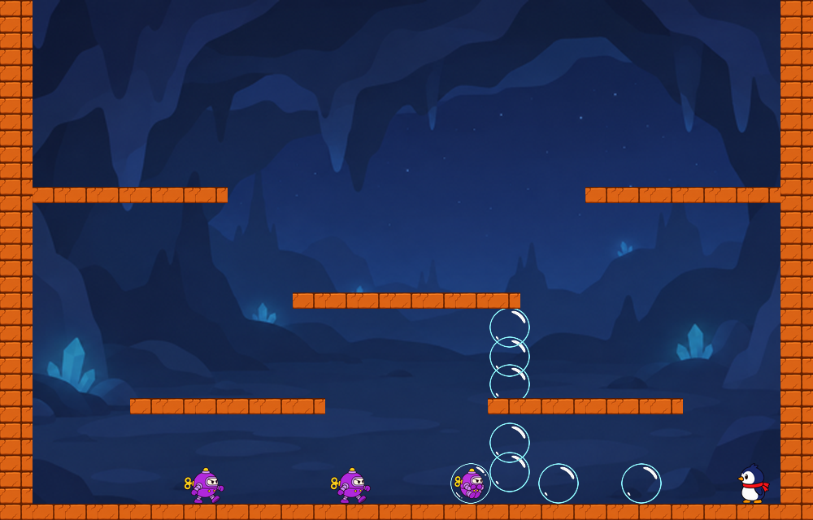
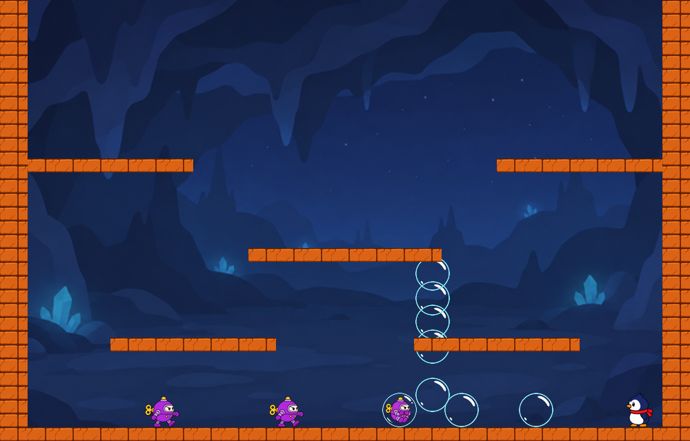

12장. 적군 가두기
11장에서는 플레이어, 적군, 물방울의 공통 코드를 Sprite로 옮겼습니다. 이번 장에서는 물방울에 닿은 적군을 가둡니다. 두 물체의 사각형이 겹치는지 검사하고, 적군의 상태를 바꿉니다.
먼저 적군을 갇힌 그림으로 바꾼 뒤, 갇힌 적군의 이동과 낙하를 멈춥니다. 장을 마치면 갇힌 적군은 제자리에 남고, 나머지 적군은 계속 걸어옵니다.

12-1 물방울에 닿은 적군 가두기
물방울과 적군이 화면에서 겹쳐도 프로그램이 저절로 충돌을 알아내지는 않습니다. 게임 루프에서 두 물체의 위치와 크기를 비교해야 합니다.
이번에는 각 물체를 둘러싼 사각형으로 충돌을 판정합니다. 물방울이 적군에 닿으면 적군의 bubbled를 true로 바꾸고, 갇힌 그림을 표시합니다. 적군을 맞힌 물방울은 사라지게 합니다.
충돌 판정과 상태 변경 코드 추가하기
src/bubble/game의 Bubble.java, Enemy.java, BubbleFrame.java를 수정합니다.
Bubble에는 물방울을 터진 상태로 바꾸는 pop()을 추가합니다. Enemy에는 갇힌 상태와 그림을 준비하고, trap()을 추가합니다. BubbleFrame에서는 물방울을 움직인 직후 적군과 겹치는지 검사합니다.
keepInWall(); setLocation(x, y); } public void pop() { popped = true; }}import javax.swing.ImageIcon;import lombok.Getter;public class Enemy extends Sprite { private static final int SPEED = 2; private ImageIcon enemyR; private ImageIcon enemyL; private ImageIcon enemyBubbled; @Getter private boolean bubbled; public Enemy(int x, int y, Direction direction) { super(x, y, direction); enemyR = new ImageIcon("image/enemyR.png"); enemyL = new ImageIcon("image/enemyL.png"); enemyBubbled = new ImageIcon("image/enemyBubbled.png"); if (direction == Direction.LEFT) { setIcon(enemyL); } else {⋯ } else { setIcon(enemyR); } if (bubbled) { setIcon(enemyBubbled); } setLocation(x, y); } public void trap() { bubbled = true; setIcon(enemyBubbled); }} } for (Bubble bubble : bubbles) { bubble.move(); for (Enemy enemy : enemies) { boolean hit = bubble.getBounds().intersects(enemy.getBounds()); if (hit && !bubble.isPopped() && !enemy.isBubbled()) { enemy.trap(); bubble.pop(); } } if (bubble.isPopped()) { remove(bubble); }getBounds()로 두 사각형 비교하기
getBounds()는 컴포넌트의 위치와 크기를 Rectangle로 돌려줍니다. Rectangle은 좌표와 너비, 높이를 담는 사각형입니다. Player, Enemy, Bubble은 Sprite를 거쳐 JLabel을 상속하므로 이 메서드를 사용할 수 있습니다.
bubble.getBounds()는 물방울의 사각형을, enemy.getBounds()는 적군의 사각형을 구합니다. 두 물체는 같은 콘텐츠 영역에 놓여 있으므로 같은 기준의 좌표로 비교합니다.
intersects()는 두 사각형에 겹치는 영역이 있으면 true를 반환합니다. 테두리만 맞닿고 겹치는 영역이 없으면 false입니다. 반환값은 hit에 저장합니다.
여기서 비교하는 범위는 그림의 색칠된 부분이 아니라 JLabel의 사각형 전체입니다. 그림 파일에 투명한 여백이 있으면 그 여백도 판정 범위에 포함됩니다.
tick()에서는 먼저 bubble.move()를 호출해 화면 위치를 갱신합니다. 그 뒤 getBounds()로 검사하므로 이동한 자리에서 적군과 겹치는지 판단합니다.
갇힌 상태를 적군에 기록하기
bubbled는 적군이 물방울에 갇혔는지 기억하는 상태입니다. 처음에는 false이고, trap()이 실행되면 true가 됩니다.
필드에 붙인 @Getter는 Lombok이 isBubbled()를 만들게 합니다. BubbleFrame은 이 메서드로 적군의 상태를 확인합니다. 상태를 바꾸는 일은 trap()에 맡깁니다.
trap()은 상태를 바꾸면서 enemyBubbled 그림도 바로 표시합니다. 다음 이동을 기다리지 않고, 맞은 순간 갇힌 모습으로 바꾸기 위해서입니다.
그런데 Enemy.move()에는 방향에 따라 enemyL이나 enemyR을 선택하는 코드가 있습니다. trap()에서만 그림을 바꾸면 다음 이동 때 걷는 그림으로 되돌아갑니다. 그래서 방향 그림을 선택한 뒤 bubbled를 확인합니다. 갇힌 상태이면 마지막에 enemyBubbled를 다시 지정해 갇힌 모습을 유지합니다.
이 단계에서는 그림과 상태만 바꿉니다. 이동 코드는 그대로이므로 갇힌 적군도 계속 걷습니다.
한 물방울이 한 적군만 가두게 하기
적군을 가두려면 세 조건을 모두 만족해야 합니다.
hit은 두 사각형이 겹쳤는지 확인합니다. !bubble.isPopped()는 아직 터지지 않은 물방울인지 확인합니다. !enemy.isBubbled()는 아직 갇히지 않은 적군인지 확인합니다. 세 조건이 모두 참이면 trap()과 pop()을 호출합니다.
물방울 하나를 움직일 때 안쪽 반복문은 적군을 하나씩 확인합니다. 첫 적군을 가둔 뒤에도 다음 적군을 검사하지만, 이미 pop()이 실행되어 popped가 true입니다. 따라서 같은 물방울로 다른 적군까지 가두지는 않습니다.
이미 갇힌 적군은 다시 가두지 않습니다. 갇힌 적군과 겹쳤다는 이유만으로 물방울이 사라지지도 않습니다.
Bubble.pop()은 popped를 true로 바꿀 뿐, 직접 화면에서 물방울을 지우지는 않습니다. 적군 검사가 끝나면 기존의 isPopped() 검사에서 remove(bubble)을 실행합니다. 9장에서 만든 목록 제거 코드도 그대로 사용합니다. 수명이 끝났을 때와 적군을 맞혔을 때 모두 같은 절차로 물방울을 제거합니다.
물방울에 맞은 적군 확인하기
실행 결과
BubbleFrame을 Run As → Java Application으로 실행합니다. 펭귄을 바닥 오른쪽으로 이동한 뒤, 적군 쪽을 바라보고 스페이스를 누릅니다.
물방울이 적군과 겹치면 적군 하나가 갇힌 그림으로 바뀝니다. 적군을 맞힌 물방울은 화면에서 사라집니다. 다만 갇힌 적군은 아직 멈추지 않고 계속 걷습니다.
갇힌 적군이 움직이는 것은 이번 절에서 이동을 막지 않았기 때문입니다. 다음 절에서는 bubbled 상태에 따라 게임 루프가 이동과 낙하를 건너뛰게 합니다.
12-2 갇힌 적군 멈추기
지금의 tick()은 모든 적군에게 매번 move()와 fall()을 호출합니다. 적군이 갇혔는지 확인하지 않으므로 그림이 바뀌어도 계속 움직입니다.
갇힌 적군을 제자리에 두려면 가로 이동과 낙하를 함께 멈춰야 합니다. 두 메서드 호출을 조건문 안으로 옮겨, 갇히지 않은 적군만 움직이게 합니다.
이동과 낙하 앞에 상태 조건 넣기
src/bubble/game/BubbleFrame.java를 수정합니다. 적군 반복문에서 무조건 실행하던 enemy.move()와 enemy.fall(floors)를 지웁니다. 같은 두 줄을 if (!enemy.isBubbled()) 안에 넣습니다.
player.move(); player.fall(floors); for (Enemy enemy : enemies) { enemy.move(); enemy.fall(floors); if (!enemy.isBubbled()) { enemy.move(); enemy.fall(floors); } } for (Bubble bubble : bubbles) { bubble.move();같은 반복문에서 상태에 따라 다르게 움직이기
!enemy.isBubbled()는 적군이 갇히지 않았을 때 true입니다. 이때만 move()와 fall(floors)가 실행됩니다. 갇힌 적군은 두 호출을 모두 건너뛰므로 그 자리에 남습니다.
move()만 건너뛰면 가로 이동은 멈춰도 중력 때문에 아래로 떨어질 수 있습니다. 이번에는 물방울 속에서 멈추게 하므로 fall()도 같은 조건문 안에 둡니다. 공중에서 갇혔다면 그 높이를 유지합니다.
적군을 목록에서 지우거나 게임 루프 전체를 멈출 필요는 없습니다. 반복문은 계속 모든 적군을 확인하고, 각 적군의 상태에 따라 이동 여부를 결정합니다. 갇히지 않은 적군과 플레이어, 물방울은 계속 움직입니다.
tick()에서는 적군의 이동이 물방울 충돌 검사보다 먼저 실행됩니다. 따라서 적군이 갇힌 틱에서는 이미 이동을 마친 상태입니다. 그 뒤 충돌 검사에서 bubbled가 true로 바뀌면, 다음 틱부터 이동과 낙하를 건너뜁니다.
갇힌 적군과 남은 적군 비교하기
실행 결과
게임을 다시 실행하고 적군 하나를 물방울로 맞힙니다. 갇힌 그림으로 바뀐 적군은 그 자리에 멈춥니다. 펭귄을 다른 곳으로 움직여도 갇힌 적군의 위치는 바뀌지 않습니다.
다른 적군은 계속 걷고 벽에서 돌아섭니다. 펭귄 쪽을 향한 적군은 펭귄에게 다가오지만, 갇힌 적군은 물방울 속에 그대로 남습니다.

12장 완성 코드 보관하기
동작을 확인한 뒤 src/bubble/game의 이번 장 완성 코드를 ex12에 복사해 보관합니다. 다음 장에서는 갇힌 적군에 펭귄이 닿으면 적군을 터뜨리도록 만듭니다.